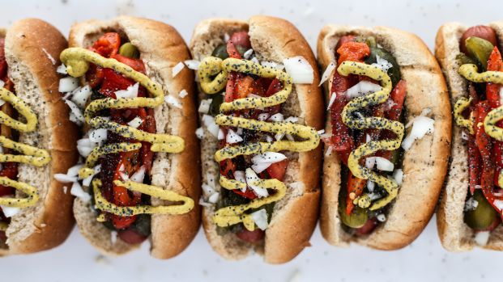

Bekah's Pulled Pork

The meat is oh-so-tender and the sauce is absolutely out of this world! I plan to make the sauce to use as BBQ for ribs, chicken or whatever. I served the meat on warm tortillas with sides of shredded lettuce and chopped onion.
Chicago-Style Hot Dog
I got an urge for these hot dogs and was not sure how to make them myself until I found this recipe. I especially loved it with the hot peppers.
Flag Sheetcake
This is a huge cake, so it's perfect for a crowd. For being so big and decorated, it's actually quite easy to make. Ina Garten can do no wrong, in my book. I used a 'Wilton No. 21 Open Star Tip' to pipe the stars and stripes.